library(tidyverse)
library(RTextTools)
library(tidytext)
data(NYTimes)
NYtimes <- NYTimes |>
as_tibble() |>
mutate(Date = dmy(Date))
#explain why looking at upper case words in particular (upper case means bigger deal and use extra emotion)
UppercaseNYT <- NYtimes |>
mutate(Title = as.character(Title)) |>
filter(str_detect(Title, "\\b[A-Z]+\\b"))
UppercaseNYT_clean <- UppercaseNYT |>
unnest_tokens(word, Title) Mini Project Part 3
Introduction
In the past, I’ve heard people complain about how the news is always too negative and emotional to listen to or read and that it never has any happy stories. I have heard of this data set containing New York Times article titles in the 90s and 2000s. I wanted to see if this seem to be true with these titles, so I did some analysis on this data set to see whether this may be true or not.
In the past, I’ve noticed that people tend to express more emotion using words containing all uppercase letters. In this analysis I compare sentiments in titles with lowercase letters to titles with uppercase letters, and I also compare those uppercase titles to subtitles within those titles to see if they are any different.
Normal_title_NYT <- NYtimes |>
mutate(Title = as.character(Title)) |>
anti_join(UppercaseNYT, by = c("Title" = "Title"))
Normal_title_NYT_clean <- Normal_title_NYT |>
unnest_tokens(word, Title)
NYT_sentiments_values_lower <- Normal_title_NYT_clean |>
inner_join(get_sentiments("afinn"))
NYT_sentiments_values_upper <- UppercaseNYT_clean |>
inner_join(get_sentiments("afinn"))
PostColon <- UppercaseNYT |>
mutate(TitlesPostColon = str_extract(Title, ":.*")) |>
select(-Title) |>
drop_na() |>
mutate(TitlesPostColon = str_extract(TitlesPostColon, "[A-Z].*"))
PostColon_clean <- PostColon |>
unnest_tokens(word, TitlesPostColon)
NYT_sentiments_values_post_colon <- PostColon_clean |>
inner_join(get_sentiments("afinn"))Analysis
NYT_sentiments_values_lower|>
summarize(average_sentiment_value_lower = mean(value))# A tibble: 1 × 1
average_sentiment_value_lower
<dbl>
1 -0.690NYT_sentiments_values_upper|>
summarize(average_sentiment_value_caps = mean(value))# A tibble: 1 × 1
average_sentiment_value_caps
<dbl>
1 -0.822NYT_sentiments_values_post_colon|>
summarize(average_sentiment_value_subtitles = mean(value))# A tibble: 1 × 1
average_sentiment_value_subtitles
<dbl>
1 -0.569The sentimental value scale works as following: the higher the distance away from zero the values are, the more sentimental it is, and if the value is positive, the sentiments are positive sentiments while if the values are negative, they are negative sentiments. Now we can see that in all three cases that we have an average of slightly negative words being used in these titles whereas predicted the most sentimental titles are all upper ones. Even though the subtitles are also in all uppercase the sentiments are slightly more positive than the lowercase data.
NYT_sentiments_values_lower |>
mutate(year = str_sub(Date, 1, 4)) |>
group_by(year) |>
summarize(average_sentiment_value_lower = mean(value)) |>
ggplot(aes(x = as.numeric(year), y = average_sentiment_value_lower)) +
geom_point() +
geom_line() +
labs(title = "Sentiment Value in NYT Lowercase Titles Each Year", x = "Year", y = "Average Sentiment Value")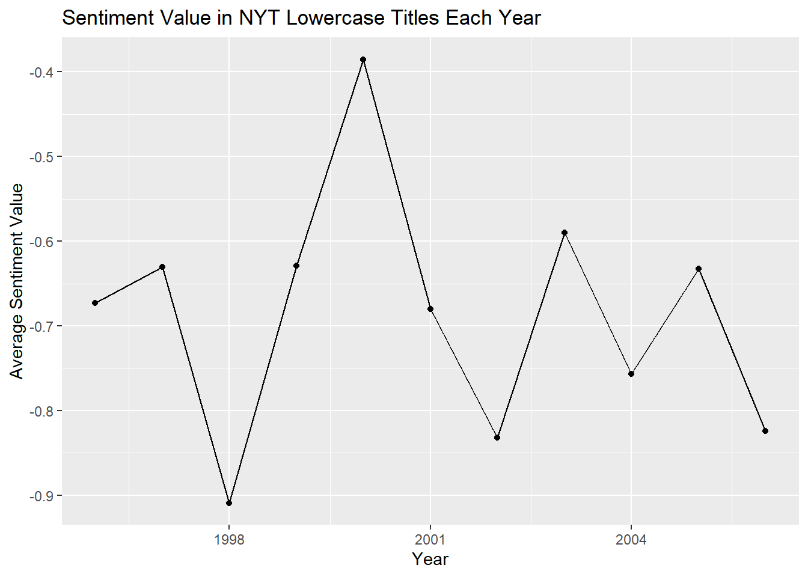
NYT_sentiments_values_upper |>
mutate(year = str_sub(Date, 1, 4)) |>
group_by(year) |>
summarize(average_sentiment_value_caps = mean(value)) |>
ggplot(aes(x = as.numeric(year), y = average_sentiment_value_caps)) +
geom_point() +
geom_line() +
labs(title = "Sentiment Value in NYT Capitalized Titles Each Year", x = "Year", y = "Average Sentiment Value")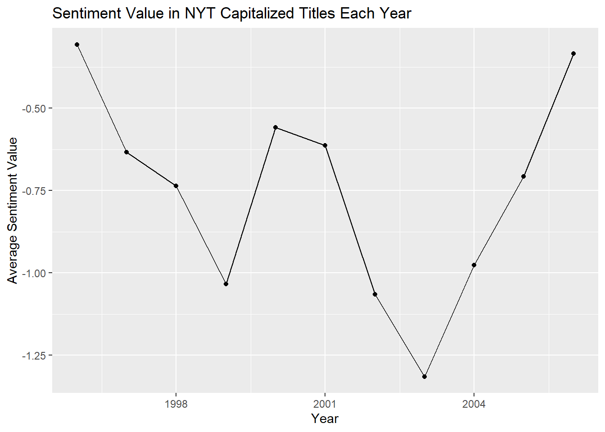
NYT_sentiments_values_post_colon |>
mutate(year = str_sub(Date, 1, 4)) |>
group_by(year) |>
summarize(average_sentiment_value_subtitles = mean(value)) |>
ggplot(aes(x = as.numeric(year), y = average_sentiment_value_subtitles)) +
geom_point() +
geom_line() +
labs(title = "Sentiment Value in NYT Subtitles Each Year", x = "Year", y = "Average Sentiment Value")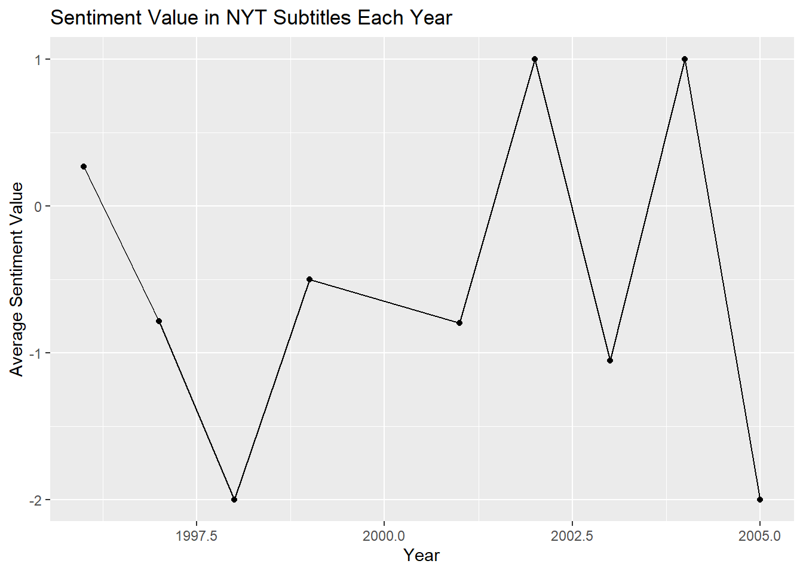
Here we compare the sentimental value for each of our three categories by year. There aren’t any trends that are notable between the three that are similar. However, it is interesting to see if you look at the scales, that all uppercase titles are clearly more negatively sentimental than the others. It is also interesting to see that there are some average year values in the subtitles data that are slightly positive.
NYT_sentiments_pos_neg_lower <- Normal_title_NYT_clean |>
inner_join(get_sentiments("bing"))
NYT_sentiments_pos_neg_upper <- UppercaseNYT_clean |>
inner_join(get_sentiments("bing"))
NYT_sentiments_pos_neg_post_colon <- PostColon_clean |>
inner_join(get_sentiments("bing"))Now let’s move onto sentimental data where instead of assigning positive and negative sentimental values, we only look at positive and negative sentimental categories.
NYT_sentiments_pos_neg_lower |>
mutate(year = str_sub(Date, 1, 4)) |>
ggplot(aes(x = sentiment)) +
geom_bar() +
labs(title = "Number of Negative and Positive Sentimental Words in Lowercase Titles", x = "Sentiment Category", y = "Word Count")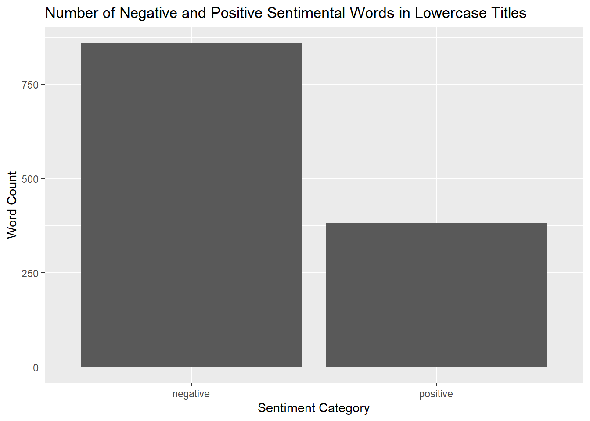
NYT_sentiments_pos_neg_upper |>
mutate(year = str_sub(Date, 1, 4)) |>
ggplot(aes(x = sentiment)) +
geom_bar() +
labs(title = "Number of Negative and Positive Sentimental Words in Capitalized Titles", x = "Sentiment Category", y = "Word Count")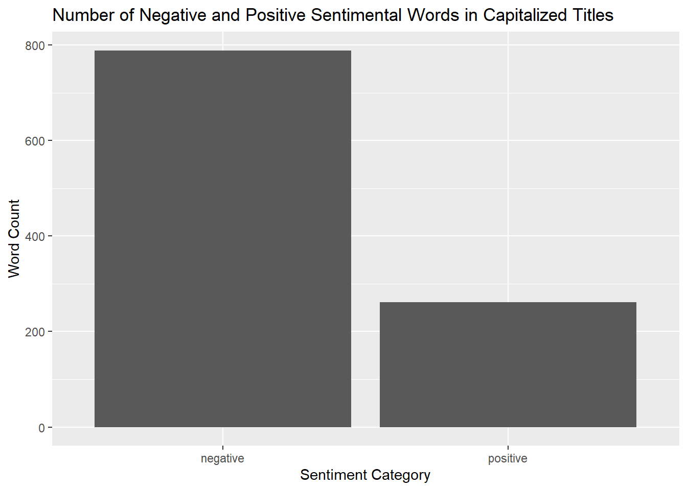
NYT_sentiments_pos_neg_post_colon |>
mutate(year = str_sub(Date, 1, 4)) |>
ggplot(aes(x = sentiment)) +
geom_bar() +
labs(title = "Number of Negative and Positive Sentimental Words in Subtitles", x = "Sentiment Category", y = "Word Count")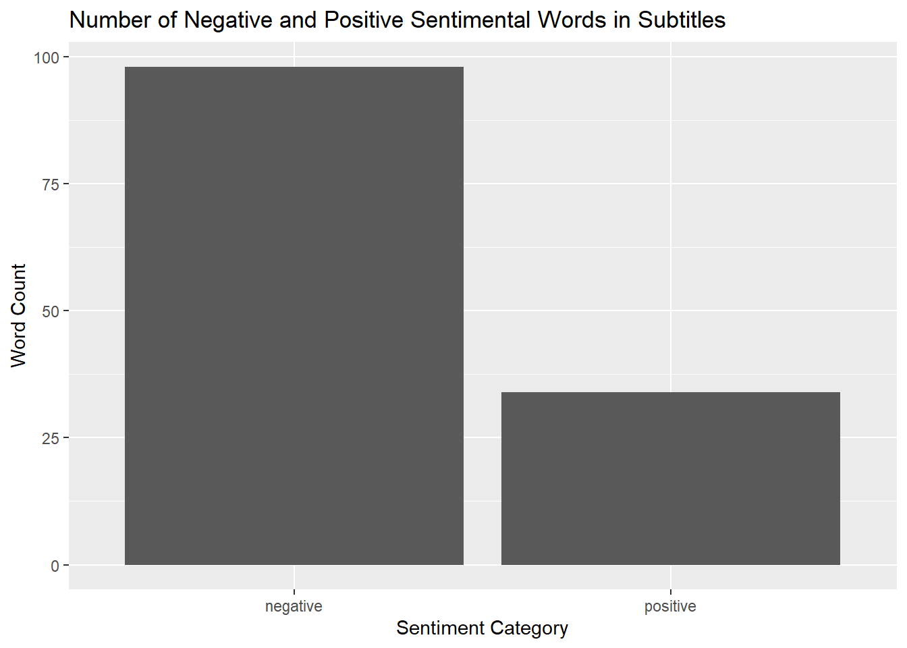
The story that these plots tell showing the number of negative and positive sentimental words in each of the categories that we see is that speaking proportionally, there are far more negative, sentimental words being used in the titles containing uppercase words.
NYT_sentiments_pos_neg_lower |>
mutate(year = str_sub(Date, 1, 4)) |>
group_by(sentiment, year) |>
summarize(n =n()) |>
ungroup() |>
ggplot(aes(x=year, y = n)) +
geom_col() +
facet_wrap(~sentiment) +
labs(title = "Number of Negative and Positive Sentimental Words in Lowercase Title by Years", x = "Year", y = "Word Count")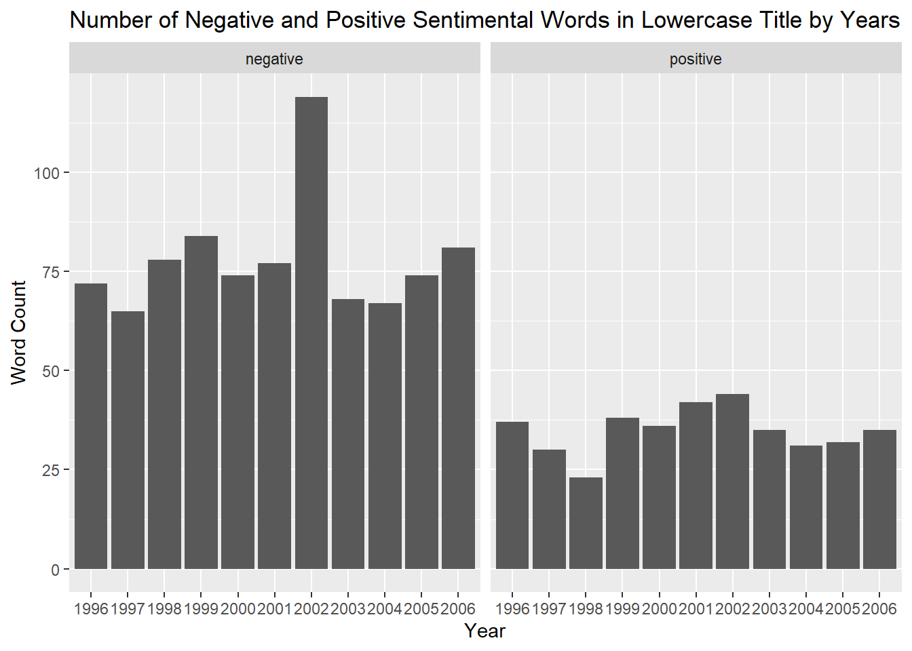
NYT_sentiments_pos_neg_upper |>
mutate(year = str_sub(Date, 1, 4)) |>
group_by(sentiment, year) |>
summarize(n =n()) |>
ungroup() |>
ggplot(aes(x=year, y = n)) +
geom_col() +
facet_wrap(~sentiment) +
labs(title = "Number of Negative and Positive Sentimental Words in Capitalized Title by Years", x = "Year", y = "Word Count")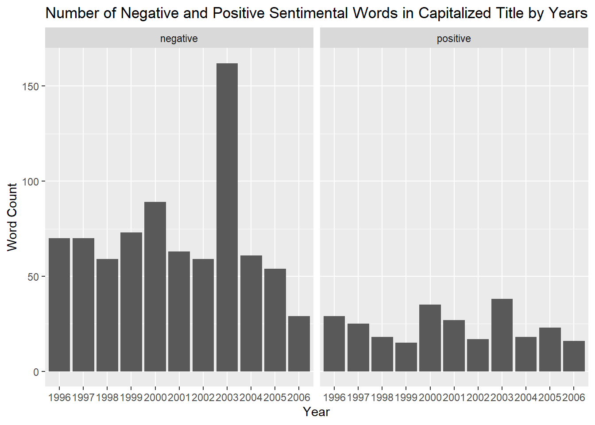
NYT_sentiments_pos_neg_post_colon |>
mutate(year = str_sub(Date, 1, 4)) |>
group_by(sentiment, year) |>
summarize(n =n()) |>
ungroup() |>
ggplot(aes(x=year, y = n)) +
geom_col() +
facet_wrap(~sentiment) +
labs(title = "Number of Negative and Positive Sentimental Words in Subtitle by Years", x = "Year", y = "Word Count")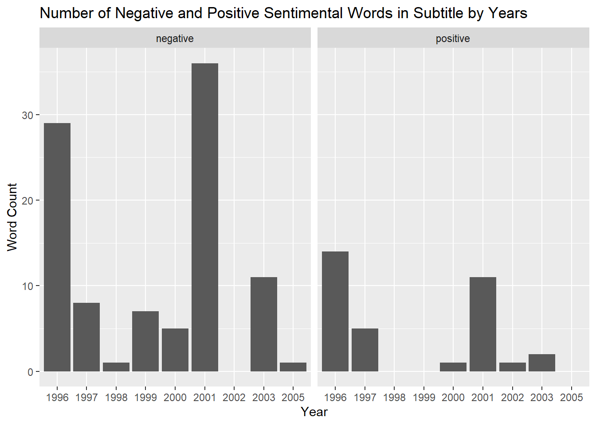
When looking at the same situation by year, it seems that the lowercase words were a preference for sentimental titles in 2002 while the uppercase words seem to be a preference for sentimental titles in 2003. The subtitles apparently tended to be more sentimental in the years 1996 and 2001. This is true for all the years stated for all these categories for both the positive and negative sentiments.
NYT_sentiments_lower <- Normal_title_NYT_clean |>
inner_join(get_sentiments("nrc"))
NYT_sentiments_upper <- UppercaseNYT_clean |>
inner_join(get_sentiments("nrc"))
NYT_sentiments_post_colon <- PostColon_clean |>
inner_join(get_sentiments("nrc"))Now, let’s move onto data containing sentiment categories.
NYT_sentiments_lower |>
mutate(year = str_sub(Date, 1, 4)) |>
ggplot(aes(x = sentiment)) +
geom_bar() +
labs(title = "Number of Sentimental Words in Lowercase Titles", x = "Sentiment Category", y = "Word Count")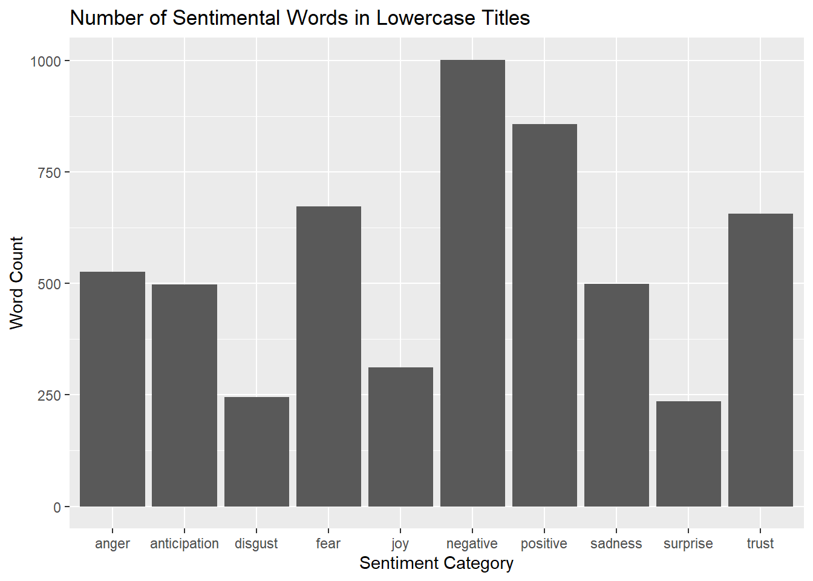
NYT_sentiments_upper |>
mutate(year = str_sub(Date, 1, 4)) |>
ggplot(aes(x = sentiment)) +
geom_bar() +
labs(title = "Number of Sentimental Words in Capitalized Titles", x = "Sentiment Category", y = "Word Count")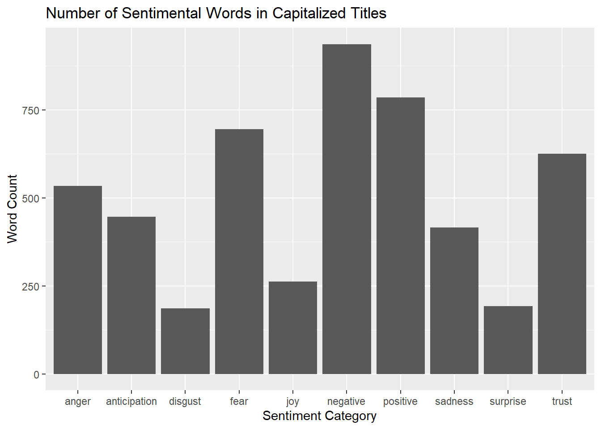
NYT_sentiments_post_colon |>
mutate(year = str_sub(Date, 1, 4)) |>
ggplot(aes(x = sentiment)) +
geom_bar() +
labs(title = "Number of Sentimental Words in Subtitles", x = "Sentiment Category", y = "Word Count")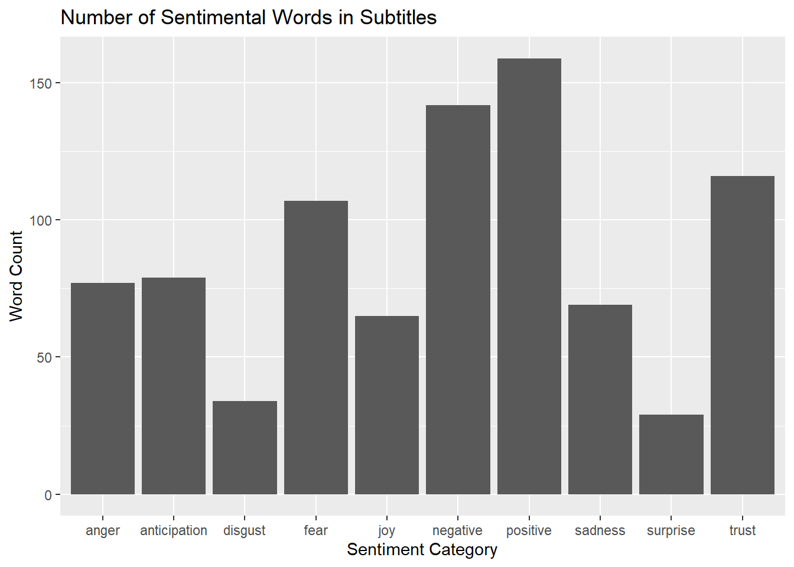
Some things to note with these three plots is that they all look similar. The categories of trust and fear are both also decently high for all three categories and probably contributes to the positive and negative categories the most. It is also worth noting that comparing the positive and negative categories here, there actually seems to be more positive words in the subtitles than negative, but this is not true for the other two categories.
NYT_sentiments_lower |>
mutate(year = str_sub(Date, 1, 4)) |>
group_by(sentiment, year) |>
summarize(n =n()) |>
ungroup() |>
ggplot(aes(x=year, y = n)) +
geom_col() +
facet_wrap(~sentiment) +
labs(title = "Number of Sentimental Words in Lowercase Title by Years", x = "Year", y = "Word Count")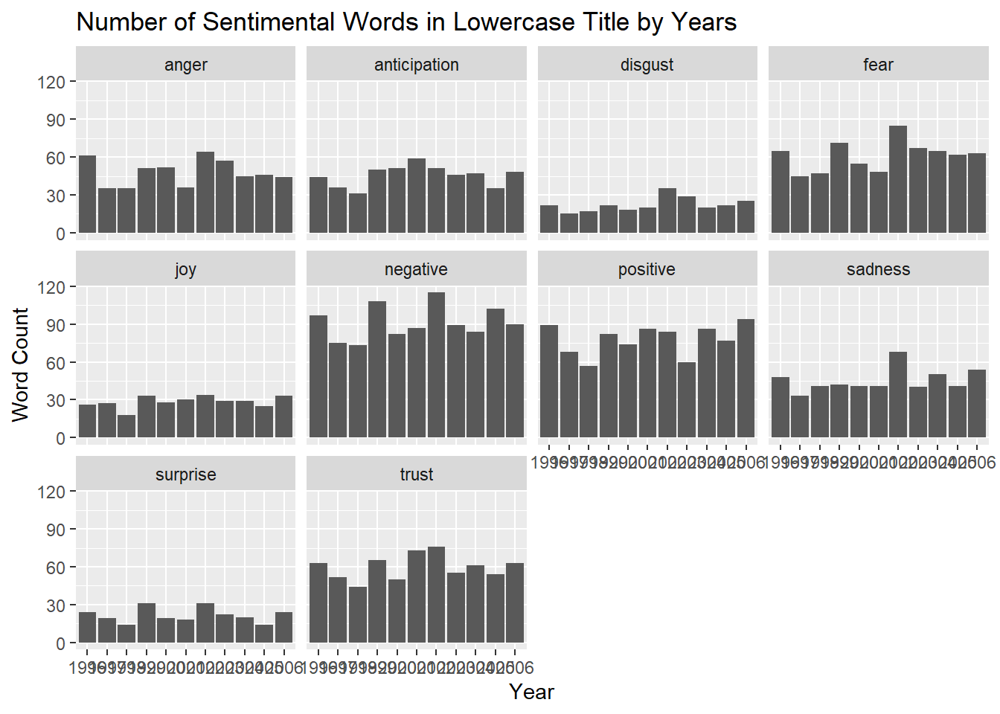
NYT_sentiments_upper |>
mutate(year = str_sub(Date, 1, 4)) |>
group_by(sentiment, year) |>
summarize(n =n()) |>
ungroup() |>
ggplot(aes(x=year, y = n)) +
geom_col() +
facet_wrap(~sentiment) +
labs(title = "Number of Sentimental Words in Capitalized Title by Years", x = "Year", y = "Word Count")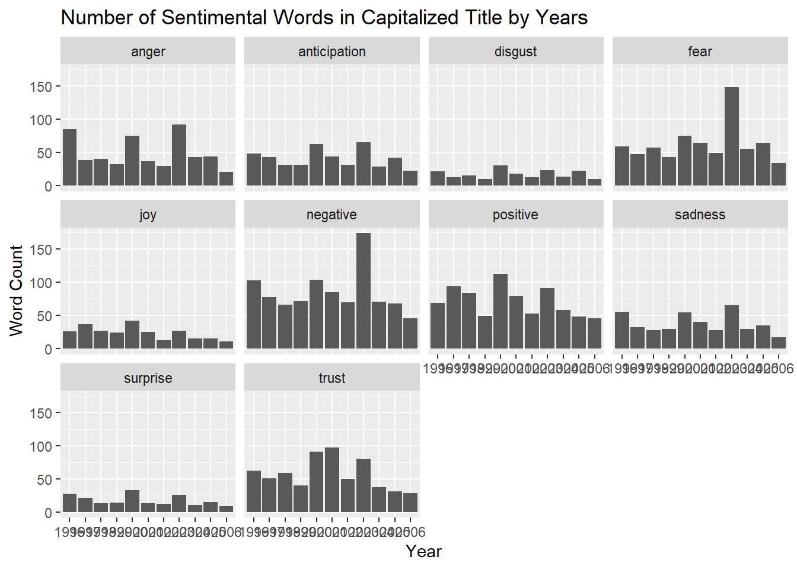
NYT_sentiments_post_colon |>
mutate(year = str_sub(Date, 1, 4)) |>
group_by(sentiment, year) |>
summarize(n =n()) |>
ungroup() |>
ggplot(aes(x=year, y = n)) +
geom_col() +
facet_wrap(~sentiment) +
labs(title = "Number of Sentimental Words in Subtitle by Years", x = "Year", y = "Word Count")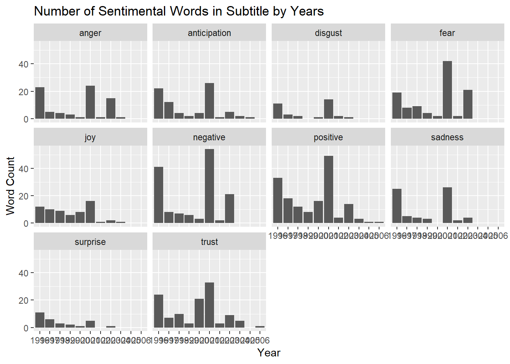
For both the uppercase and lowercase data it seems like the sentiments categories of fear sadness anger and discussed are all very high on the same years. It is also worth noting that there is very little joy and surprise in all these years further showing the news does tend to be negative in terms of sentiments as predicted. It is tough to analyze this data for the subtitles since we have a small sample size and most of these sentiment categories seem to look similar. However, we still have the same trends of little joy and surprise as in the other two examples.
Conclusion
Uppercase titles tend to be more negative than lowercase titles while even though the subtitles with uppercase words tend to be more neutral than the other two categories, they are still slightly negative.